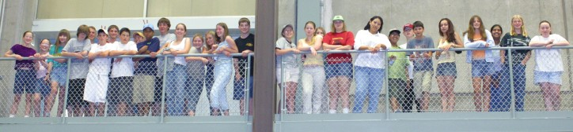

Register for the next Beginning Teen Astronomy Camp
The next Beginning Teen Astronomy Camp is scheduled for
June 10-16, 2019
Students should be between the ages of 13 and 15 years. Some exceptions are made in special circumstances by Dr. McCarthy, the Camp Director.
Reservations are limited to 25 students. Completed applications are being accepted on a first-come, first-served basis. Students are required to contact Dr. McCarthy before applying.
June 10-16, 2019
Students should be between the ages of 13 and 15 years. Some exceptions are made in special circumstances by Dr. McCarthy, the Camp Director.
Reservations are limited to 25 students. Completed applications are being accepted on a first-come, first-served basis. Students are required to contact Dr. McCarthy before applying.

Astronomy Campers get a behind the scenes look at the Steward Observatory Mirror Lab.
Parents
Before Applying, you must consider your child's transportation to and from Astronomy Camp. We require
that students arrive in Tucson on the first day (June 10) of Camp before 3 pm Tucson time. On the last day (June 16),
we will be driving two hours from a remote mountain site to Tucson, so students cannot depart on airline flights any
earlier than 2:00 pm Tucson time. Limitations in airline schedules may make these arrangements difficult depending on your location.
Although we can accommodate a few students arriving one day early and/or departing one day late, such arrangements are inconvenient and
will necessitate additional cost to you.
Please email Dr. McCarthy, if you have travel concerns and questions.
Also, please note the following:
Please email Dr. McCarthy, if you have travel concerns and questions.
Also, please note the following:
- The tuition fee of $1100 includes all expenses during the Camp session such as room, board, materials, and local travel.
- Scholarships are available in case of financial need. Please include the Scholarship Form in your application.
- Travel arrangements must be confirmed with Dr. McCarthy no later than April 15.
- Scholarship notification will made no later than March 4.
To Apply
In order to apply, first email Dr. McCarthy to confirm space is available and then mail the following five items in a single mailing to the address shown below. We will then send you follow-up information.
The remainder of the $1100 tuition fee must be received no later than April 15.
Cancellation after this date will result in a forfeiture of 50% of the tuition fee.
Mail the above five items together to:
- Parents: Please read the above admonition about travel to/from Tucson.
- The completed application form
- A handwritten, 500 word essay on "Why I Want to Attend Astronomy Camp," including a description of the kinds of celestial objects you hope to study at Camp
- Your deposit in the amount of $250 (payable to Astronomy Camp) unless you are a scholarship applicant. [The full tuition is $1100; $50 is a non-refundable handling fee.]
- The signed disclaimer form
- Scholarship Application form (if necessary).
Mail the above five items together to:
Dr. Don McCarthy
Beginning Astronomy Camp for Teens
Steward Observatory
933 N. Cherry Ave.
Tucson, AZ 85721-0065
Beginning Astronomy Camp for Teens
Steward Observatory
933 N. Cherry Ave.
Tucson, AZ 85721-0065
Home | Information | Registration | Articles | Links
All Images, Media and Content - Copyright © 2019 Astronomy Camp
Site Design by Jacob Omann. Maintained by Astronomy Camp. Updated December 28, 2018
All Images, Media and Content - Copyright © 2019 Astronomy Camp
Site Design by Jacob Omann. Maintained by Astronomy Camp. Updated December 28, 2018